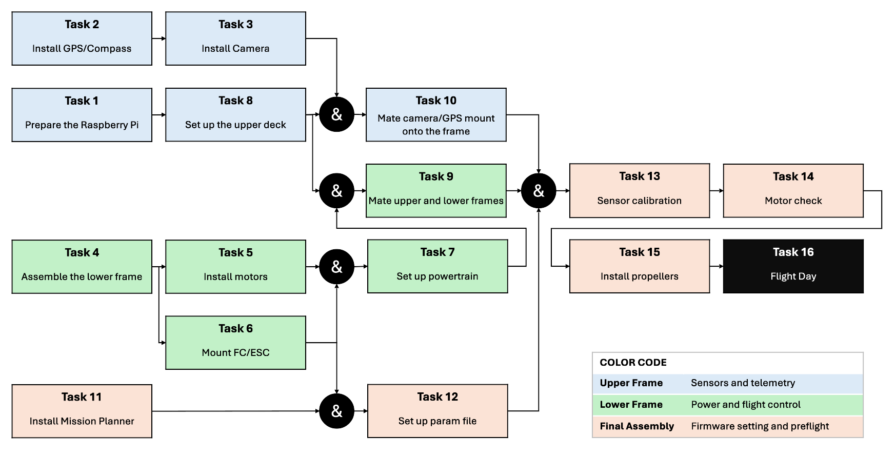

HAMR II Build Manual
Bench instructions for HAMR II. Use the deck-derived task flow below and stop any time a page tells you to seek faculty verification.
Before you start
Open only the task you are working on. Keep the parts in their labeled bags, and compare every orientation against the figure on the page before tightening hardware.
Bench rules
- Keep propellers off until Task 15.
- Do not connect the 4S LiPo battery unless the current step tells you to do so.
- Start all screws by hand before tightening any one screw fully.
- Maintain positive control of issued tools, loose hardware, and any bag that must be reused later.
- When a step says STOP, pause and get faculty verification before continuing.

Overall build flow for the current build sequence.
Task Navigator
Open the next task only after you complete its blockers. The same Task Navigator is available from the top bar on every page.